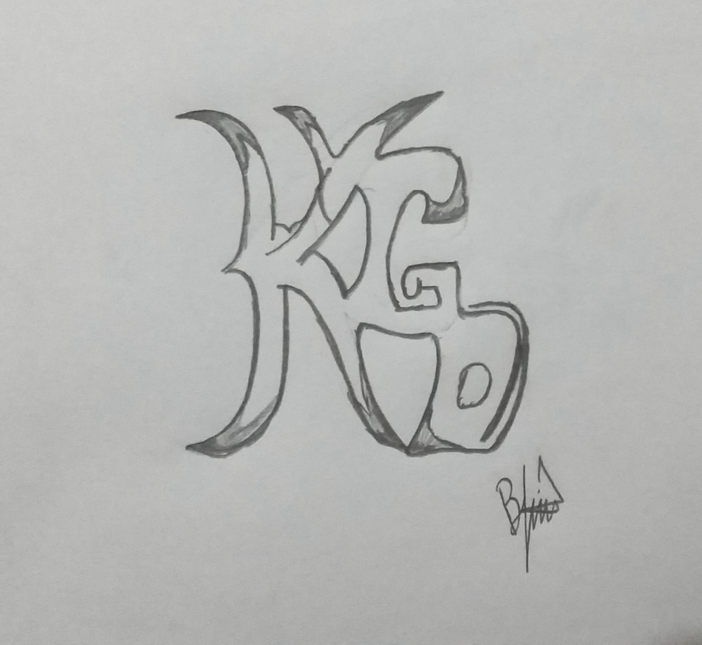
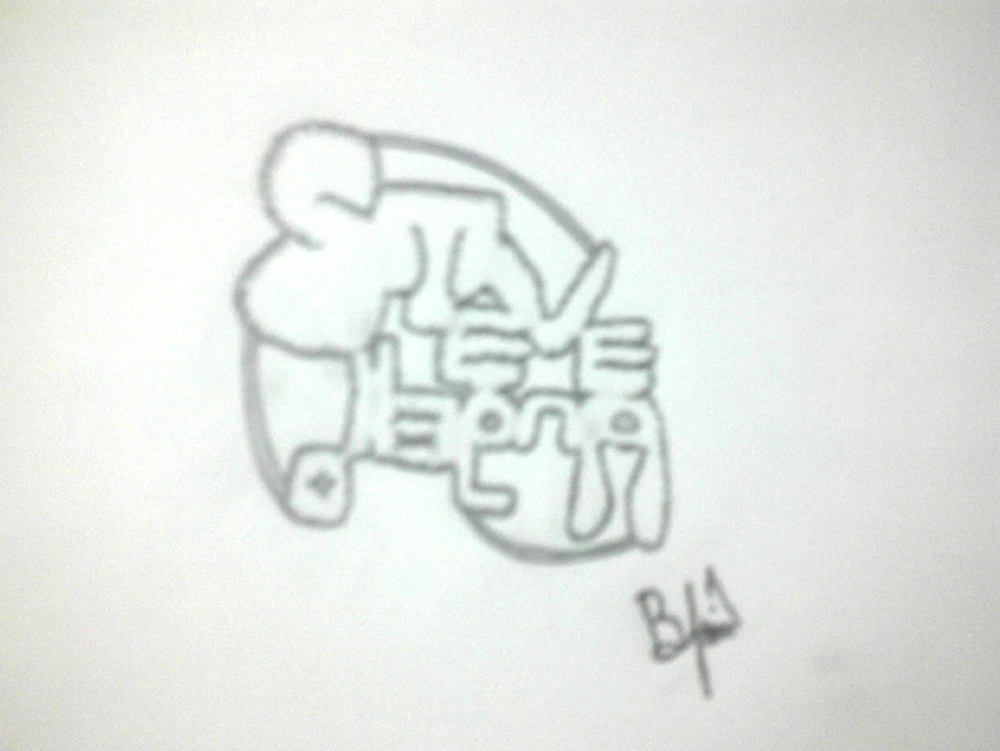
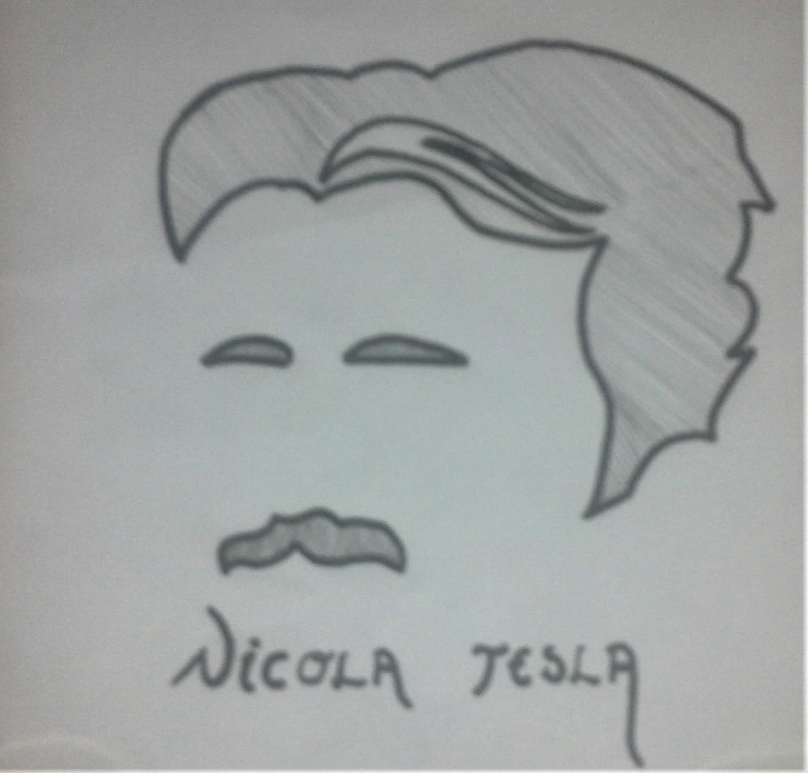
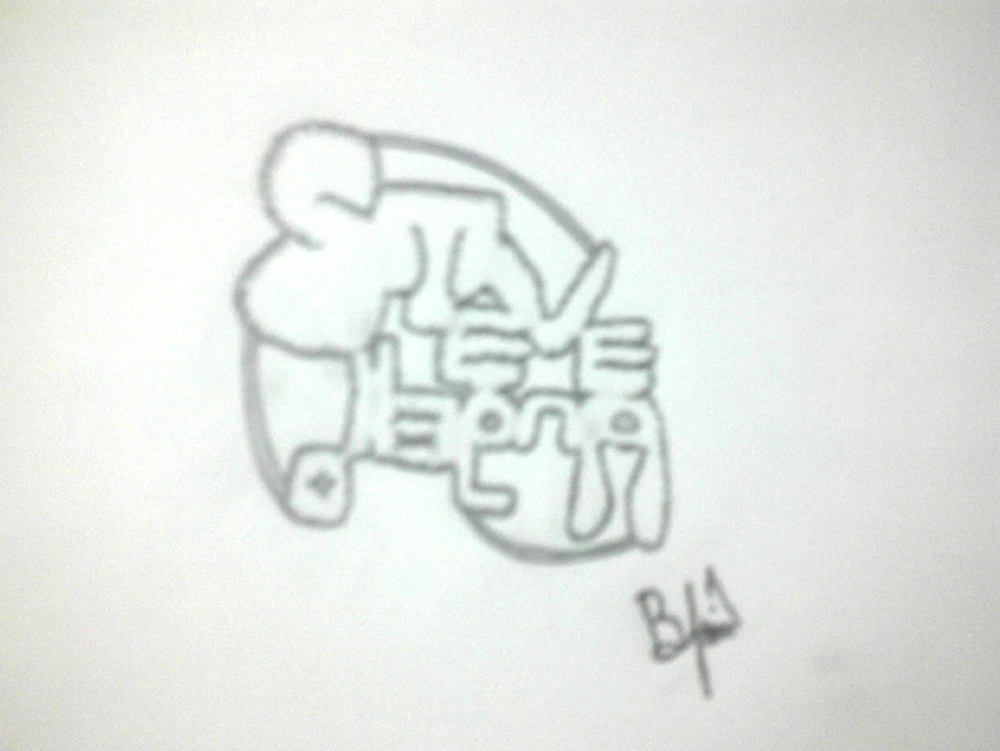
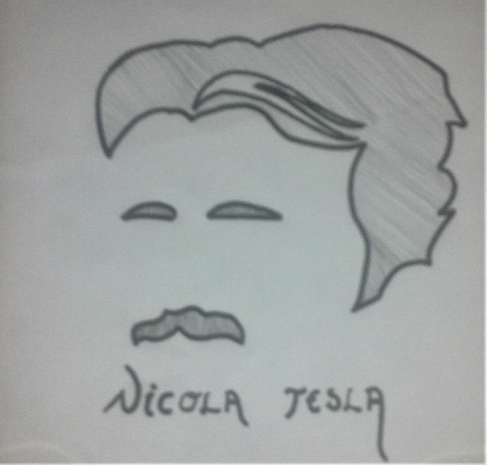
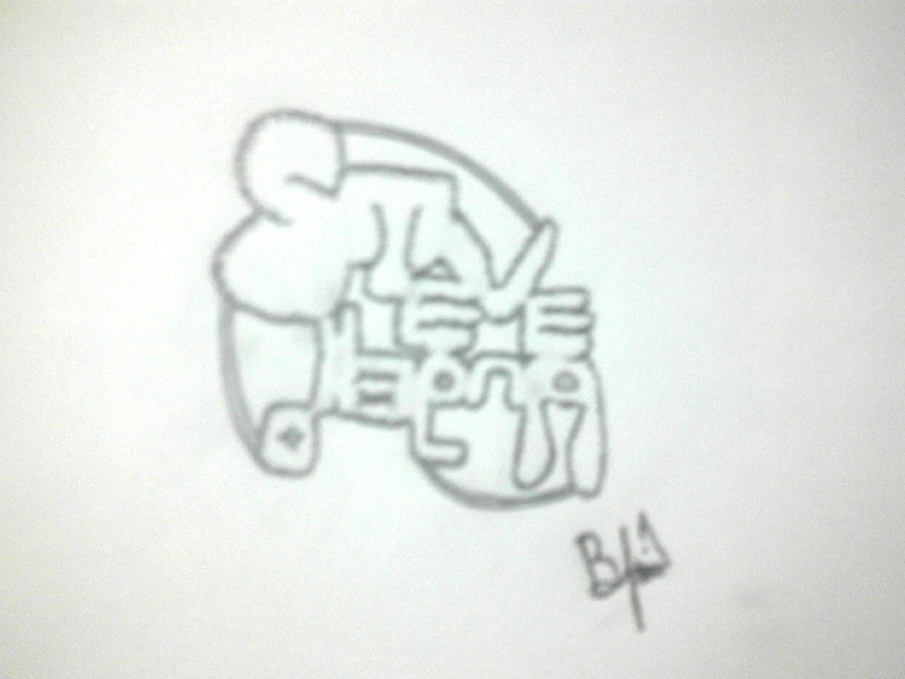
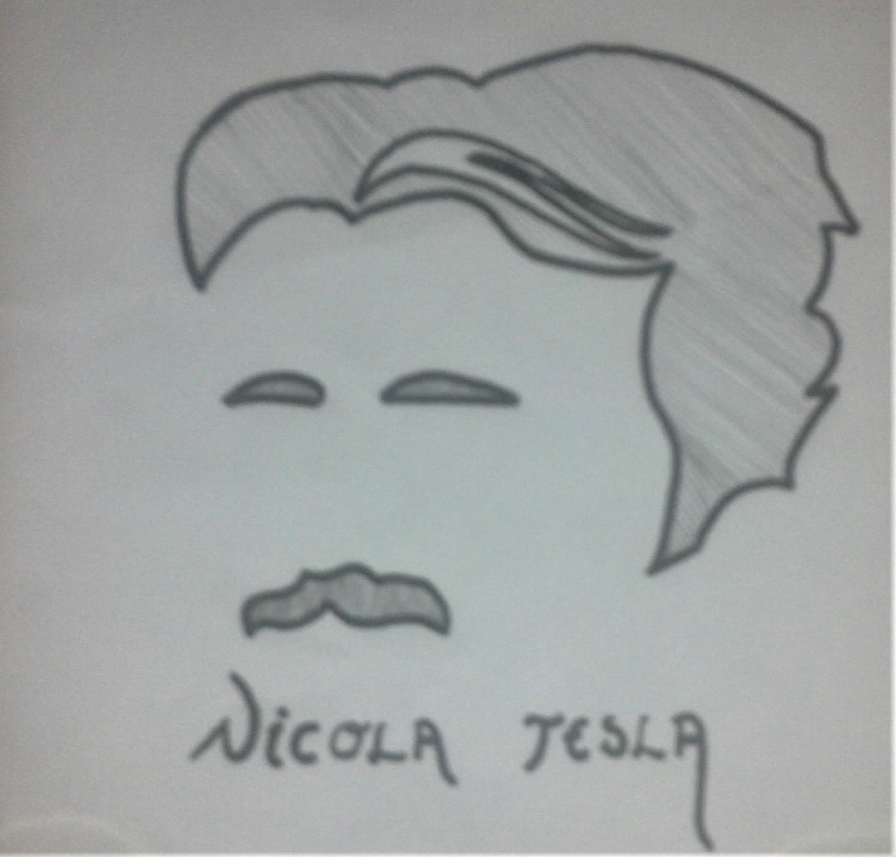

Yeteneklerim

Angular
7/10
NestJS
6/10
JAVA
5/10
MongoDB
5/10
Python
4/10
React
4/10
MySQL
4/10
React Native
3/10
Git
6/10
Adobe XD
3/10
Projelerim
Talaşlı İmalat Sektöründe Yapay Zeka Temelli Üretim Planlaması Web Uygulaması (Angular 8 + NestJS + MongoDB + mongoose)
Halihazırda üzerinde çalıştığım bu projede web tarafında görev alıyorum. Proje kısaca bir Talaşlı İmalat Fabrikasında bir ürünün stok takibinden üretim aşamalarının tanımlanmasına, ürün bazında gerekli çalışan ve makinelerin belirlenmesinden en optimum üretim planmasını yapmaya kadar geçen süreci otomatize etmek amacıyla geliştirilen bir projedir. Bu projede frontend tarafında Angular 8'i, backend tarafında NestJS'i ve veritabanı tarafında ise MongoDB'yi kullanmaktayım.
Metinden Duygu Çıkarımı Yapabilen Web Uygulaması - NLP Projesi (keras + sklearn + nltk + react + flask)
Üniversite'de 2 arkadaşım ile birlikte Doğal Dil İşleme dersinin projesi olarak Duygu Algılama (Emotion Detection) ve Duygu Analizi (Sentiment Analysis) yaklaşımlarını harmanlayarak geliştirdiğimiz ve daha kullanılabilir olması için mesajlaşma arayüzüne sahip web uygulama ile son halini alan bir projedir. Projede Duygu Analizi için Keras kütüphanesi kullanılarak bir GRU model ve Duygu Algılama için de yine Keras kütüphanesi kullanılarak bidirectional LSTM model oluşturduk. Twitter API kullanılarak veri seti hazırladık. Projenin bir web arayüzü olduğundan arayüzde React, python dosyalarıyla da iletişim kurmak için sunucu tarafında Flask kullandık.
Uygulama şu şekilde çalışıyor:
- Kullanıcı herhangi bir mesaj yazıp gönderdiğinde ilgili mesaj sunucuya iletiliyor.
- Hem Duygu Algılama hem de Duygu Analizi teknikleriyle gelen mesajın duygusu belirleniyor ve ilgili duygu kategorisinden seçilen bir emoji arayüze gönderiliyor.
- Sunucudan gelen emoji arayüzdeki mesaj ile birleştirilip karşı tarafa gönderiliyor.
- Bu sayede yazılan mesaj için en uygun emoji seçilmiş oluyor.
Cubicl İş Takip Programı (Angular 8 - Laravel - MongoDB (mongoose))
Bir İş Takip Programı olan bu projede kullanıcılar tarafından bildirilen hataları çözmeye, eğer gerekliyse hata kapsamında kullanıcı arayüzünde değişiklik yapmaya veyahutta sadece sunucu tarafını iyileştirecek kodlar geliştirmeye çalışıyorum.
Evcil Hayvan Sahiplendirme Projesi (React + Spring Boot + MySQL + Hibernate)
2 arkadaşımla birlikte Bitirme projesi için geliştirdiğimiz bir platform. Hem kullanıcıların hem de barınakların bir çatı altında buluştuğu bir platform yapmaktı amacımız. Bu doğrultuda geliştirmelerimizi yaptık. Ayrıca "Bilgisayarlı Görü" tekniğinden yararlanarak kullandığımız model sayesinde platformumuza "Resimden tür belirleme" özelliğini eklemiş olduk. Şuan için site bakımlarımız, hata düzeltmelerimiz devam etmekte. Ama son kullanıcının erişebilmesi için server'a yükledik. Şu adresten inceleyebilirsiniz: "http://pet-adoption.surge.sh/"
Evcil Hayvan Sahiplendirme - Mobil Uygulama Projesi (React Native(Expo) + Spring Boot + MySQL + Hibernate)
2 arkadaşımla birlikte Bitirme projesi için geliştirdiğimiz Evcil Hayvan Sahiplendirme projesinin mobil uygulaması. Web sitemizi kullanan kullanıcılar ve barınaklara daha iyi bir deneyim sunabilmek için mobil platformlara da bir uygulama geliştiriyoruz. Bu projede aslında bize çok yeni bir teknoloji olan "React Native"i kullanıyoruz. Kullandığımız hazır UI Kit'i sebebiyle "expo" ile hem Android'e hem de IOS'a aynı anda geliştirme yapabiliyoruz. Şuan için emekleme aşamasındayız ama web sitesindeki özellikleri mobil tarafa aktarma çalışmalarımız devam ediyor.
Evcil Hayvan Sahiplendirme Projesi (React + Spring Boot + MySQL + Hibernate)
2 arkadaşımla birlikte Bitirme projesi için geliştirdiğimiz bir platform. Hem kullanıcıların hem de barınakların bir çatı altında buluştuğu bir platform yapmaktı amacımız. Bu doğrultuda geliştirmelerimizi yaptık. Ayrıca "Bilgisayarlı Görü" tekniğinden yararlanarak kullandığımız model sayesinde platformumuza "Resimden tür belirleme" özelliğini eklemiş olduk. Şuan için site bakımlarımız, hata düzeltmelerimiz devam etmekte. Ama son kullanıcının erişebilmesi için server'a yükledik. Şu adresten inceleyebilirsiniz: "http://pet-adoption.surge.sh/"
Elektronik Ticaret Sitesi Projesi ( React + Spring Boot + Postgresql + Hibernate )
Üniversite 3. sınıfta, 5 kişilik bir arkadaş grubuyla amatör de olsa bir "Elektronik Ticaret Sitesi" kurduk. Tam bir Yazılım Mühendisliği gibi çalıştığımız bu proje'de "Yazılım Mimarı" olarak görev aldım. Ve 3 arkadaş ile birlikte sitenin ön yüzünü geliştirmek adına React ile uğraştım.

Hobilerim



 




